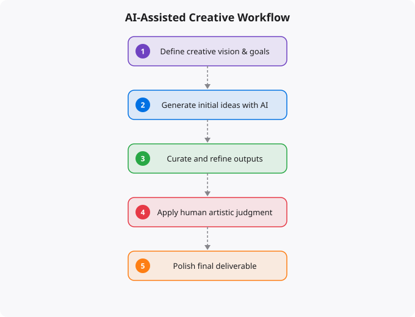

AI and Adobe: What the Creativity Revolution Really Means

Adobe has spent decades building the definitive tools for creative professionals. Photoshop, Illustrator, Premiere Pro, After Effects — these products defined what it meant to do serious creative work digitally. The integration of AI across Adobe's product suite, branded as Adobe Firefly and embedded throughout Adobe Creative Cloud, represents the most significant transformation of creative tools since the software itself replaced physical media. Understanding what this transformation actually means — for creative work, for careers, for the value of creative skills — requires looking beyond the demos and the marketing.
What Adobe's AI Integration Actually Does
Adobe Firefly is Adobe's generative AI model, trained specifically on licensed content from Adobe Stock and content where creators have given explicit permission. This approach addresses one of the major concerns around AI image generation — the training on copyrighted content without permission that has surrounded tools like Midjourney and Stable Diffusion. Adobe positions Firefly as safe for commercial use, which matters significantly for professional applications.
The practical capabilities span multiple dimensions. Generative Fill in Photoshop allows you to select an area of an image and describe what you want to add, replace, or extend — and the AI generates photorealistic content that matches the lighting, style, and context of the surrounding image. What previously required extensive compositing, masking, and retouching work can now be accomplished in seconds. Text effects powered by Firefly can generate elaborate typographic treatments — text that appears to be made of specific materials, embedded in specific environments, styled in specific ways — that would have required complex 3D work or intricate compositing before. In Premiere Pro, AI-powered features handle tasks like automated color matching, background removal, and speech-to-text transcription that previously required significant manual effort.
The Impact on Creative Workflows
The most immediate impact of AI integration in Adobe's tools is on the time cost of specific tasks. Repetitive, technically complex tasks that required skill and time — removing backgrounds, extending images, adjusting color across a large batch of photos, creating variations on a design concept — can now be accomplished much faster. This changes the economics of creative work. When production tasks that previously took hours take minutes, the bottleneck shifts from production to ideation, judgment, and refinement. More time can be spent on the genuinely creative decisions — what should this look like? does this communicate the right thing? — and less on the technical execution of those decisions. For experienced creative professionals, this is an accelerant. For beginners, it lowers the technical barrier to producing professional-looking work.
What This Means for Creative Skills
The debate about whether AI creativity tools will replace creative professionals misunderstands what makes creative professionals valuable. The value was never in the ability to technically execute in software. The value is in taste, judgment, communication, and the ability to understand and serve a brief. An art director who knows what makes a visual compelling, what will resonate with a specific audience, and how to communicate a brand idea — those skills are not automated by Generative Fill. A video editor who can construct a narrative, pace a sequence, and understand what emotional response is needed — that skill is not replaced by automated color matching. AI tools automate the execution; they do not automate the vision, the taste, or the understanding of purpose.
The Prompt Engineering Dimension
Effective use of AI creative tools requires a new skill: visual prompt engineering. Describing what you want the AI to generate in a way that produces useful results requires developing an understanding of the AI's vocabulary and capabilities. Experienced users of AI creative tools develop extensive practical knowledge — what prompts tend to produce what results, how to describe lighting, what terms help achieve specific stylistic directions, how to iterate toward the desired outcome. This skill is neither trivial nor sufficient on its own. It requires the same underlying taste and visual knowledge that effective creative direction has always required. The person who can translate a vague creative brief into a precise, effective AI prompt that produces useful output is combining traditional creative judgment with new technical fluency.
The Democratization and Its Implications
AI creative tools genuinely democratize access to capabilities that were previously gated by technical skill. A small business owner can now create more professional marketing materials than before. An indie game developer can generate concept art without a dedicated artist. A social media creator can produce more varied, polished visuals with less effort. This democratization is real and broadly beneficial. It does, however, change the competitive landscape for professional creatives. When the baseline of visual production quality rises, differentiation moves toward originality, conceptual depth, and strategic communication — the things that require human creativity and judgment. This rewards the creatives who develop strong conceptual skills and client relationship skills alongside technical proficiency, and creates pressure on those whose value was primarily in technical execution.
Key takeaways
- AI is changing creative work, not killing it. Tools like Adobe Firefly speed up the boring parts so creators can spend more time on the parts only humans can do — taste, judgement, story.
- Creativity has always been about constraints + recombination. AI lowers some constraints (technical execution) but raises others (taste matters more when speed is free).
- The creators who thrive will use AI as a force multiplier, not a replacement for thinking. The ones who only "prompt and pray" will be replaced by the next model.
- Build the foundational skills first — colour theory, typography, composition — then let AI accelerate. Tools without taste produce noise.
Staying Current in a Fast-Moving Field
Artificial intelligence is evolving faster than almost any other technology domain. The specific tools, models, and capabilities that are current today will look different in a year. This makes staying current a genuine challenge — the half-life of specific technical knowledge is short. The strategies that work: follow the primary sources (research blogs from Anthropic, OpenAI, Google DeepMind, Hugging Face) rather than relying on summaries that may be outdated. Focus on underlying principles that transfer — model architecture concepts, evaluation methods, prompt engineering principles — rather than memorizing specific tool interfaces that will change. Build things with current tools to develop practical intuition, even knowing those specific tools will evolve. The professionals who navigate fast-moving fields best are those who can quickly assess new developments, extract the signal from the noise, and rapidly evaluate what is genuinely significant versus what is marketing.
Disclaimer:
This article is written for educational and informational purposes only.
It does not provide financial, legal, investment, or professional advice.
Cloud services, pricing, security, and practices may vary by provider,
region, and use case. Always verify information from official
documentation before making decisions.
Practical AI Workflows for Creative Professionals
The most successful creative professionals I have spoken to are not afraid of AI -- they have systematically integrated it into their workflow to handle the repetitive parts while focusing their human attention on the parts that require genuine creative judgment. Here is how that looks in practice across different creative disciplines.
A graphic designer using Adobe Firefly generates 20 concept variations in 10 minutes. They then spend their creative energy choosing the direction, refining the typography, adjusting the colour palette, and ensuring the final design fits the brand perfectly. The AI handled ideation breadth; the human handled quality and context. The result is better work in less time.
# A content creator's AI-enhanced workflow:
Step 1: Brief and Research (AI assists)
- Use Claude/ChatGPT to research the topic
- Generate an outline with key sections
- Identify SEO keywords with AI tools
Step 2: Visual Concept (AI generates options)
- Adobe Firefly: generate 10-20 visual concepts
- Midjourney: explore different art styles
- DALL-E: create custom illustrations
Step 3: Human Creative Direction
- Select and refine the best AI-generated concepts
- Add brand-specific elements and typography
- Adjust colours, composition, and messaging
Step 4: Production (AI assists)
- Photoshop Generative Fill for background extension
- Remove object for clean cutouts
- Upscale for print quality
Step 5: Review and Delivery (Human judgment)
- Brand consistency check
- Client review and feedback
- Final refinementsWhich Adobe AI Features Are Actually Useful
Adobe has integrated AI throughout Creative Cloud, but not all features are equally useful. Based on real workflow testing, here are the ones that genuinely save time and enhance output quality.
Generative Fill (Photoshop): The single most useful AI feature in Adobe's suite. Select an area, type a description, and Photoshop generates contextually appropriate content. Removing unwanted objects, extending backgrounds, and adding elements that were not in the original photo -- all done in seconds with remarkable quality.
Adobe Firefly Text-to-Image: Excellent for generating stock-photo-quality images directly within Creative Cloud without copyright concerns. The images are trained on licensed data, making them safe for commercial use -- a significant advantage over some other generators.
Sensei in Lightroom: Subject selection, sky replacement, and Enhance Details are genuinely time-saving. The AI selects complex subjects (hair, fur, intricate objects) with accuracy that would take minutes manually. For photographers editing at volume, this alone justifies the subscription.
Auto Reframe in Premiere Pro: Automatically reframes landscape video for portrait (Instagram Reels, TikTok) by tracking the main subject. For video creators repurposing content across platforms, this saves hours per week.
More Questions Answered
Will AI replace graphic designers?
No. AI is replacing specific tasks within design work (generating options, removing backgrounds, extending images) but the role of a designer -- understanding client needs, making strategic visual decisions, ensuring brand consistency, and communicating effectively -- requires human judgment. Designers who use AI tools become dramatically more productive and can deliver more value.
Is Adobe Firefly free to use?
Adobe Firefly is included with Creative Cloud subscriptions. There is also a free web-based version at firefly.adobe.com with limited monthly generation credits. Paid plans offer more credits and commercial use rights. The content generated with Firefly is commercially safe because Adobe trained it on licensed content.
Can AI-generated images be used commercially?
It depends on the tool. Adobe Firefly is designed for commercial use with legally safe training data. Other tools like Midjourney and DALL-E have specific commercial licensing terms -- check the current terms of each service. When in doubt, use Adobe Firefly for commercial work and other tools for exploration and inspiration.
Frequently Asked Questions
Is this topic relevant for Indian tech professionals?
Yes. India is one of the fastest-growing tech markets globally. These skills are in high demand across startups, MNCs, and product companies in Bangalore, Hyderabad, Pune, and Mumbai.
How do I stay updated on this topic?
Follow official documentation, tech blogs from practitioners, GitHub repositories, and communities like Dev.to, Hashnode, and Reddit. Avoid news that creates urgency without substance.
What resources does SRJahir Tech recommend?
Official documentation first. Then practical tutorials. Then build real projects. SRJahir Tech articles are written from real production experience — bookmark the series that matches your learning goal.
How long does it take to see results after learning?
Consistent daily practice for 3-6 months produces real, usable skills. The key is building projects, not just reading. Every article on SRJahir Tech includes practical examples you can implement today.
Is SRJahir Tech content free?
Yes. All articles on SRJahir Tech are completely free. No paywalls, no subscriptions. Quality technical education should be accessible to everyone, especially aspiring engineers in India.